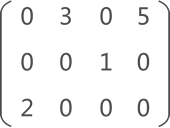
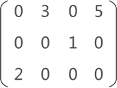
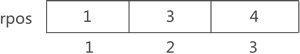

行逻辑链接的顺序表（压缩存储稀疏矩阵）详解
前面学习了如何使用三元组顺序表存储稀疏矩阵，其实现过程就是将矩阵中各个非 0 元素的行标、列标和元素值以三元组的形式存储到一维数组中。通过研究实现代码你会发现，三元组顺序表每次提取指定元素都需要遍历整个数组，运行效率很低。
本节将学习另一种存储矩阵的方法——行逻辑链接的顺序表。它可以看作是三元组顺序表的升级版，即在三元组顺序表的基础上改善了提取数据的效率。
行逻辑链接的顺序表和三元组顺序表的实现过程类似，它们存储矩阵的过程完全相同，都是将矩阵中非 0 元素的三元组（行标、列标和元素值）存储在一维数组中。但为了提高提取数据的效率，前者在存储矩阵时比后者多使用了一个数组，专门记录矩阵中每行第一个非 0 元素在一维数组中的位置。

图 1 稀疏矩阵示意图
图 1 是一个稀疏矩阵，当使用行逻辑链接的顺序表对其进行压缩存储时，需要做以下两个工作：
通过以上两步操作，即实现了使用行逻辑链接的顺序表存储稀疏矩阵。
此时，如果想从行逻辑链接的顺序表中提取元素，则可以借助 rpos 数组提高遍历数组的效率。
例如，提取图 1 稀疏矩阵中的元素 2 的过程如下：
以上操作的完整 C 语言实现代码如下：
本节将学习另一种存储矩阵的方法——行逻辑链接的顺序表。它可以看作是三元组顺序表的升级版，即在三元组顺序表的基础上改善了提取数据的效率。
行逻辑链接的顺序表和三元组顺序表的实现过程类似，它们存储矩阵的过程完全相同，都是将矩阵中非 0 元素的三元组（行标、列标和元素值）存储在一维数组中。但为了提高提取数据的效率，前者在存储矩阵时比后者多使用了一个数组，专门记录矩阵中每行第一个非 0 元素在一维数组中的位置。

图 1 稀疏矩阵示意图
图 1 是一个稀疏矩阵，当使用行逻辑链接的顺序表对其进行压缩存储时，需要做以下两个工作：
-
将矩阵中的非 0 元素采用三元组的形式存储到一维数组 data 中，如图 2 所示（和三元组顺序表一样）：

图 2 三元组存储稀疏矩阵
-
使用数组 rpos 记录矩阵中每行第一个非 0 元素在一维数组中的存储位置。如图 3 所示:

图 3 存储各行首个非 0 元素在数组中的位置
通过以上两步操作，即实现了使用行逻辑链接的顺序表存储稀疏矩阵。
此时，如果想从行逻辑链接的顺序表中提取元素，则可以借助 rpos 数组提高遍历数组的效率。
例如，提取图 1 稀疏矩阵中的元素 2 的过程如下：
- 由 rpos 数组可知，第一行首个非 0 元素位于data[1]，因此在遍历此行时，可以直接从第 data[1] 的位置开始，一直遍历到下一行首个非 0 元素所在的位置（data[3]）之前；
- 同样遍历第二行时，由 rpos 数组可知，此行首个非 0 元素位于 data[3]，因此可以直接从第 data[3] 开始，一直遍历到下一行首个非 0 元素所在的位置（data[4]）之前；
- 遍历第三行时，由 rpos 数组可知，此行首个非 0 元素位于 data[4]，由于这是矩阵的最后一行，因此一直遍历到 rpos 数组结束即可（也就是 data[tu]，tu 指的是矩阵非 0 元素的总个数）。
以上操作的完整 C 语言实现代码如下：
#include <stdio.h>
#define MAXSIZE 12500
#define MAXRC 100
#define ElemType int
typedef struct
{
int i,j;//行，列
ElemType e;//元素值
}Triple;
typedef struct
{
Triple data[MAXSIZE+1];
int rpos[MAXRC+1];//每行第一个非零元素在data数组中的位置
int mu,nu,tu;//行数，列数，元素个数
}RLSMatrix;
//矩阵的输出函数
void display(RLSMatrix M){
for(int i=1;i<=M.mu;i++){
for(int j=1;j<=M.nu;j++){
int value=0;
if(i+1 <=M.mu){
for(int k=M.rpos[i];k<M.rpos[i+1];k++){
if(i == M.data[k].i && j == M.data[k].j){
printf("%d ",M.data[k].e);
value=1;
break;
}
}
if(value==0){
printf("0 ");
}
}else{
for(int k=M.rpos[i];k<=M.tu;k++){
if(i == M.data[k].i && j == M.data[k].j){
printf("%d ",M.data[k].e);
value=1;
break;
}
}
if(value==0){
printf("0 ");
}
}
}
printf("\n");
}
}
int main(int argc, char* argv[])
{
RLSMatrix M;
M.tu = 4;
M.mu = 3;
M.nu = 4;
M.rpos[1] = 1;
M.rpos[2] = 3;
M.rpos[3] = 4;
M.data[1].e = 3;
M.data[1].i = 1;
M.data[1].j = 2;
M.data[2].e = 5;
M.data[2].i = 1;
M.data[2].j = 4;
M.data[3].e = 1;
M.data[3].i = 2;
M.data[3].j = 3;
M.data[4].e = 2;
M.data[4].i = 3;
M.data[4].j = 1;
//输出矩阵
display(M);
return 0;
}
运行结果：
0 3 0 5
0 0 1 0
2 0 0 0
总结
通过系统地学习使用行逻辑链接的顺序表压缩存储稀疏矩阵，可以发现，它仅比三元组顺序表多使用了一个 rpos 数组，从而提高了提取数据时遍历数组的效率。关注公众号「站长严长生」，在手机上阅读所有教程，随时随地都能学习。内含一款搜索神器，免费下载全网书籍和视频。

微信扫码关注公众号